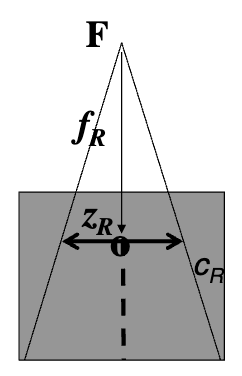

Cálculo de la dosis en geometrías arbitrarias. Formalismo de la ESTRO
Física de la radioterapia. Máster de Física Biomédica
Formalismo de cálculo
Conjunto de funciones necesarias para caracterizar la dependencia de la dosis con la geometría de la irradiación junto con los algoritmos necesarios para calcular las UM.
- Los algoritmos tienen que ser consistentes (no deben conducir a contradicciones) y reproducibles (dos usuarios que apliquen el mismo formalismo deben llegar al mismo resultado).
- Establecer formalismos estándar ayuda a intercomparar dosis entre distintos centros.
- Cualquier formalismo será una aproximación más o menos precisa al problema real dependiendo del tipo y el número de funciones que utilice.
Formalismos de mayor aplicación
- Americano, AAPM (Khan)
- Europeo, ESTRO (Dutreix et al.)
Diferencias entre formalismos
El formalismo de la ESTRO introduce el uso del minimaniquí para la medida de la dosis en aire.
Funciones utilizadas por el formalismo de la ESTRO
- Funciones para establecer la variación de la dosis con la profundidad:
- \(TPR\) (Tissue Phantom Ratio)
- \(PDD\) (Percentage Depth Dose)
- Funciones para establecer la variación de la dosis con el tamaño de campo:
- \(OF\) (Output Factor)
- \(VSR\) (Scatter Volume Ratio)
- Otras relaciones de interés:
- \(OAR\) (Off-Axis Ratio)
- Campos equivalentes
Formulaciones contempladas por el formalismo
- Tratamientos isocéntricos: basados en el \(TPR\).
- Tratamientos con distancia fuente superficie constante1: basados en el \(PDD\).
Definición de funciones
Relación Tejido Maniquí (Tissue-Phantom Ratio, \(TPR\))
\[ TPR(z, c_z) = \frac{D(z, c_z)}{D(z_R, c_{z_R})} \]
donde \(z_R = 10\) cm y \(c_z\) es el tamaño de campo a la distancia del isocentro.
El \(TPR\) toma en cuenta dos factores:
- La atenuación del haz primario con la profundidad.
- La variación de la dosis dispersada con la profundidad.
Relación \(TPR, f\) (distancia foco-detector)
La componente del \(TPR\) que proviene de radiación dispersa es en la práctica independiente de la divergencia del haz en el maniquí. Por tanto el TPR no depende de la distancia foco-detector.
Porcentaje de Dosis en Profundidad (Percent Depth Dose: \(PDD\))
\[ PDD(z, c_s, f) = \frac{D'(z, c_s, f)}{D'(z_{max}, c_{s_{s}}, f)} 100 \] \[ PDD_{z_{R}}(z, c_s, f) = \frac{D'(z, c_s, f)}{D'(z_{R}, c_{s_{s}}, f)} 100 \]
donde \(z_{R}\) suele ser 10 cm y \(c_s\) es el tamaño de campo en la superficie.
El \(PDD\) toma en cuenta tres factores:
- La atenuación del haz primario con la profundidad.
- La variación de la dosis dispersada con la profundidad.
- La disminución de la fluencia cuando \(f+z\) aumenta.
Relevancia del \(PDD\) en tratamientos isocéntricos
En tratamientos isocéntricos el \(PDD\) no es una función utilizable directamente, pero el \(PDD\) es más fácil de medir que el \(TPR\)
Factor de campo (Output Ratio o Output Factor: \(OF\))
Versión isocéntrica:
\[ OF(c_{z_R}) = \frac{D(z_R, c_{z_R})}{D(z_R, c_{R})} \]
Versión distancia fuente superficie constante: \[ OF'(c_s, f) = \frac{D'(z_R, c_s, f)}{D'(z_R, c_{Rs}, f)} \]
\(z_R\) = 10 cm para evitar problemas de contaminación electrónica.
- El \(OF\) tiene en cuenta tanto la variación de la dispersión producida en la cabeza de la unidad como la producida en el maniquí en función de \(c\).
Independencia del \(OF\) con la distancia de medida
\(OF\) es independiente de \(f\) si se especifica para el tamaño de campo a la distancia a la que se encuentra el detector. Para disposiciones con DFS constante, independientemente de dónde se haya medido, el tamaño de campo tiene que corresponder a la proyección en la superficie.
Factor de campo en minimaniquí \(OF_0\)
\[ OF_0(c_{z_R}) = \frac{D_0(z_R, c_{z_R})}{D_0(z_R, c_{Rz_{R}})} \]
\[ OF'_0(c_s, f) = \frac{D'_0(z_R, c_s, f)}{D'_0(z_R, c_{s_{R}}, f)} \]
El \(OF_0\) es prácticamente independiente de \(z_R\) siempre que ésta sea lo suficientemente grande como para que no haya contribución de la contaminación con electrones.
Medidas en minimaniquí
- Influencia despreciable de la contaminación de electrones
- Congruencia con los protocolos de dosimetría
- Medidas en una zona de mayor interés clínico
- Independencia de la variación de la profundidad del máximo de dosis con el tamaño de campo
- Versatilidad en haces de alta energía
Relación Volumen Dispersión (Volume Scatter Ratio: \(VSR\))
\[ VSR(z, c_z) = \frac{D(z, c_z)}{D(z_R, c_{z_R})} \]
El \(VSR\) mide la fracción de dosis debida a la dispersión adicional que existe en las medidas en un maniquí de dispersión total frente a las medidas en un minimaniquí.
Independencia del \(VSR\) con la distancia de medida
Se considera en términos prácticos que el \(VSR\) es independiente de \(f\)
Relaciones \(VSR\) con \(OF\), \(VSR\) con \(TPR\)
\[ \frac{VSR(z_R, c_{z_{R}})}{VSR(z_R, c_{Rz_{R}})} = \frac{D(z_R, c_{z_{R}})}{D(z_R, c_{Rz_{R}})}\cdot \frac{D_0(z_R, c_{Rz_{R}})}{D_0(z_R, c_{z_{R}})} = \frac{OF(c_{z_{R}})}{OF_0(c_{z_{R}})} \] \[ TPR(z,c_z) = \frac{D(z,c_z)}{D(z_R,c_{z_{R}})} = \frac{\frac{D(z,c_z)}{D_0(z,c_z)}D_0(z,c_z)}{\frac{D(z_R,c_{z_{R}})}{D_0(z_R,c_{z_{R}})}D_0(z_R,c_{z_{R}})}= \frac{VSR(z,c_z)}{VSR(z_R,c_{z_{R}})}\cdot\frac{D_0(z,c_z)}{D_0(z_R,c_{z_{R}})} \]
Situaciones de cálculo concretas
Cálculo de dosis en irradiación con haces cuadrados sobre maniquí homogéneo para un campo de lado \(c\) y a profundidad \(z\) en condiciones isocéntricas
\[ D(z,c)=\dot D_R \cdot U \cdot OF_R(c) \cdot TPR(z,c) = \dot D_R \cdot U \cdot OF_0(c) \cdot \frac{VSR(z_R,c)}{VSR(z_R,c_R)} \cdot TPR(z,c) \]
- \(\dot D_R\): Factor de calibración del acelerador
- \(U\): unidades monitor
Secuencia de cálculo
- \(\dot D_R \cdot U\) es la dosis en condiciones de referencia.
- Al multiplicar por \(OF_R(c)\) calculamos la dosis para el campo \(c\) a la profundidad de referencia \(z_R\).
- Al multiplicar por \(TPR(z,c)\) calculamos la dosis a la profundidad \(z\).
Cálculo de dosis en irradiación con haces cuadrados sobre maniquí homogéneo para un campo de lado \(c\) y a profundidad \(z\) en condiciones de distancia fuente superficie constante
\[ D(z,c)=\dot D'_R \cdot U \cdot OF'_R(c) \cdot \frac{PDD_R(z,c)}{100} = \dot D'_R \cdot U \cdot OF'_0(c) \cdot \frac{VSR'(z_R,c)}{VSR'(z_R,c_R)} \cdot \frac{PDD_R(z,c)}{100} \]
Cálculo de dosis en haces rectangulares \((X, Y)\)
Se emplean las fórmulas anteriores sustituyendo \(c\) por el campo cuadrado equivalente:
\[ s_e = \frac{2 \cdot X \cdot Y}{X + Y} = 4 \cdot \left(\frac{\text{área}}{\text{perímetro}}\right) \]
Esta aproximación es adecuada para las magnitudes que dependen de la radiación dispersa en el maniquí: \(VSR\), \(TPR\), \(PDD\).
No es válida en cambio para las magnitudes que dependen de la radiación dispersa en el cabezal: \(OF\), \(OF_0\). Para estas magnitudes hay que determinar mediante mediciones el campo cuadrado equivalente, \(c_e\). En general, \(c_e\) varía al intercambiar \(X\) por \(Y\).
Cálculo de dosis para distancias distintas de la distancia de referencia utilizada (no isocéntricas, o con una DFS distinta de \(f_R\))
Para las distintas contribuciones a la dosis, podemos hacer las siguientes aproximaciones:
- La radiación directa (incluyendo la dispersada en la cabeza) varía de forma inversamente proporcional al cuadrado de la distancia foco detector.
- Las magnitudes que dependen de la radiación dispersa (\(VSR\), \(OF\), \(TPR\), \(PDD\)) son independientes de la distancia foco detector, pero el tamaño de campo del que dependen es siempre el tamaño de campo a la distancia del detector.

- Partimos de la situación de calibración isocéntrica (campo \(c_R\), distancia \(f_R\), profundidad \(z_R\)) \[ D = \dot D_R \cdot U \]
- Eliminamos la contribución de la radiación dispersa \[ D = \dot D_R \cdot U \cdot \frac{1}{VSR(z_R,c_R)} \]
- Cambiamos el tamaño de campo de \(c_R\) a \(c\) \[ D = \dot D_R \cdot U \cdot \frac{1}{VSR(z_R,c_R)} \cdot OF_0(c) \]
Cambiamos la distancia foco detector de \(f_R\) a \(f\) \[ D = \dot D_R \cdot U \cdot \frac{1}{VSR(z_R,c_R)} \cdot OF_0(c) \cdot \left(\frac{f_R}{f}\right)^2 \]
Incluimos la contribución de la radiación dispersa
\[ D = \dot D_R \cdot U \cdot \frac{1}{VSR(z_R,c_R)} \cdot OF_0(c) \cdot \left(\frac{f_R}{f}\right) ^2 \cdot VSR(z_R, s') \]
\[ s' = c \cdot \frac{f}{f_R} \]
- Cambiamos la profundidad \(z_R\) a \(z\)
\[ D = \dot D_R \cdot U \cdot OF_0(c) \cdot \left(\frac{f_R}{f}\right) ^2 \cdot \frac{VSR(z_R, s')}{VSR(z_R,c_R)} \cdot TPR(z,s') \]
Del mismo modo se puede deducir la expresión correspondiente utilizando las funciones medidas a distancia fuente superficie constante.
\[ D = \dot D_R \cdot U \cdot OF'_0(c) \cdot \left(\frac{f'_R+z_R}{f'_T+z}\right) ^2 \cdot \frac{VSR'(z_R, s'')}{VSR'(z_R,c_R)} \cdot \frac{PDD_R(z,s''')}{100} \]
siendo:
\[ s''= c\cdot\frac{f'_T+z}{f_R+z_R} \]
Apéndice: relaciones de interés
\(PDD\) a diferentes DFS
\[ PDD_{z_{R}}(z, c_s, f_2) = PDD_{z_{R}}(z_R, c_s, f_1) \cdot \frac{TPR(z, c_s\cdot\frac{f_2+z}{f_2})}{TPR(z, c_s\cdot\frac{f_1+z}{f_1})}\cdot \] \[ \frac{VSR(z_R, c_s\cdot\frac{f_2+z}{f_2})}{VSR(z_R, c_s\cdot\frac{f_1+z}{f_1})}\cdot \frac{VSR(z_R, c_s\cdot\frac{f_1+z_R}{f_1})}{VSR(z_R, c_s\cdot\frac{f_2+z_R}{f_2})}\cdot \left[\left(\frac{f_2 + z_R}{f_2 + z}\right) \cdot\left(\frac{f_1 + z}{f_1 + z_R}\right)\right]^2 \]
Con buena aproximación (error inferior al 1%), podemos simplificar usando solo el factor de Mayneord.
\[ PDD_{z_{R}}(z, c_s, f_2) = PDD_{z_{R}}(z_R, c_s, f_1) \cdot \left[\left(\frac{f_2 + z_R}{f_2 + z}\right)\cdot\left(\frac{f_1 + z}{f_1 + z_R}\right)\right]^2 \]
Relación entre \(PDD\) y \(TPR\)
\[ PDD_{z_{R}} = 100\cdot TPR\left(z, cs\cdot \frac{f+z}{f}\right)\cdot\frac{VSR(z,cs\cdot\frac{f+z}{f})}{VSR(z,c_s\cdot\frac{f+z_R}{f})}\cdot\left(\frac{f+z_r}{f+z}\right)^2 \]

Cálculo de la dosis en geometrías arbitrarias. Formalismo ESTRO